macOS用Metric
メトロノームを内蔵したmacOS用のタイミング＆周波数ツールキット。テンポからのディレイタイム設定、FM比とサイドバンドの計算、LFOのビート同期、サンプルの移調ができます。ウィンドウはサイズを変えられるので、DAWの横に開いたまま使えます。Siri、Shortcuts、通知センターウィジェットに対応しています。
- タップテンポ＆ビジュアルビート付きメトロノーム
- BPM → ms / Hz コンバーター（通常、付点、3連符）
- 音 ↔ 周波数テーブル（108音、A4 = 440 Hz）
- 移調＆速度、FM計算機、LFOレート、32倍音
- メニューバーでタップテンポ、ディレイタイムをmsとHzで表示、メトロノームと音名も
- Siri、Shortcuts＆通知センターBPMウィジェット
スクリーンショット
ウェブサイトのデザインに合わせたライトモードとダークモードのスクリーンショットを収録。


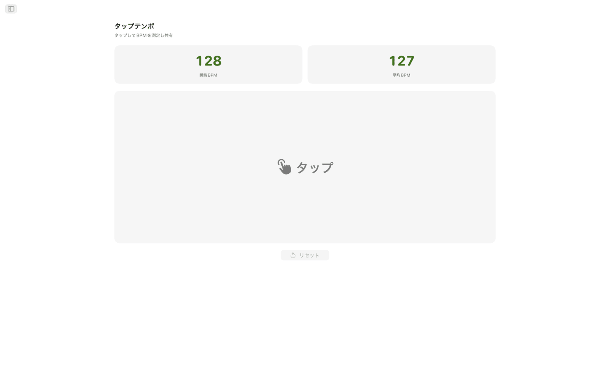
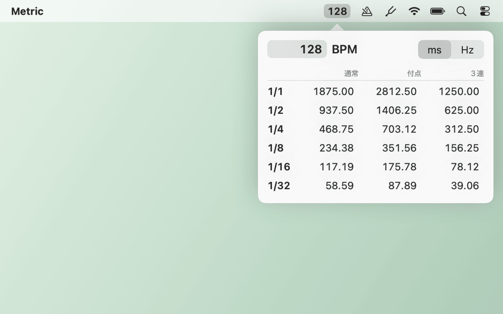
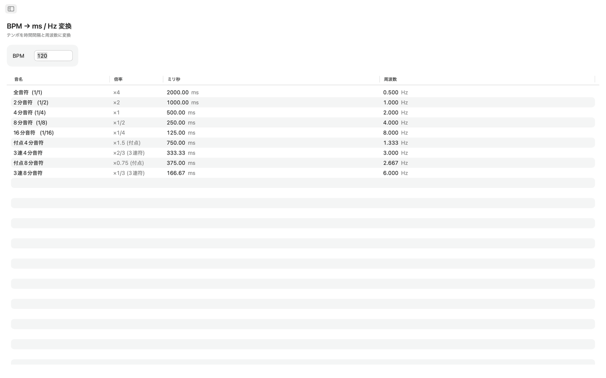
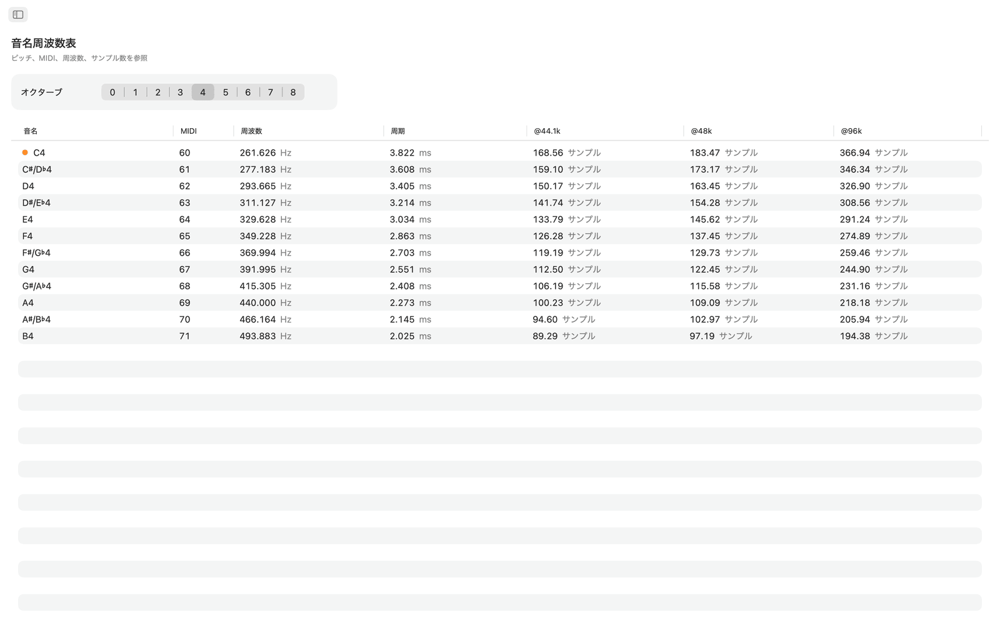
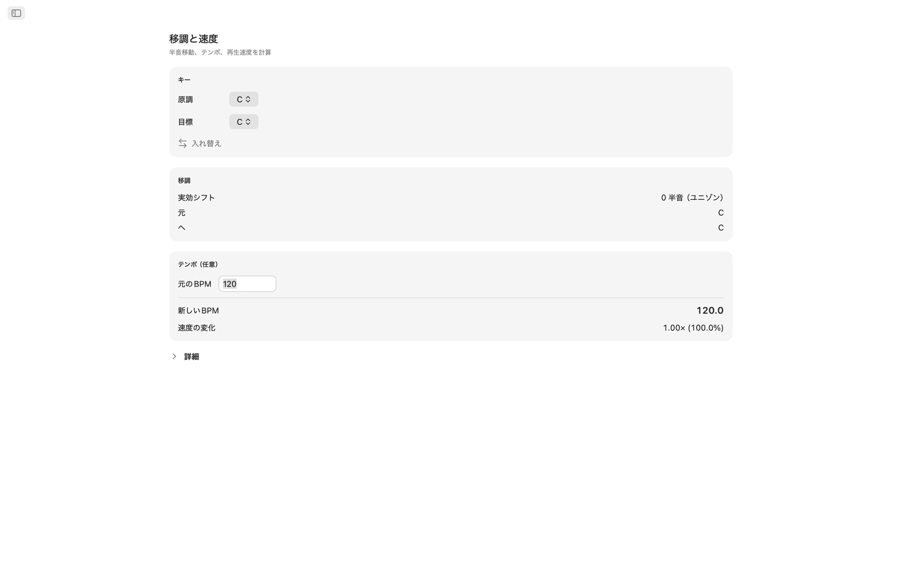
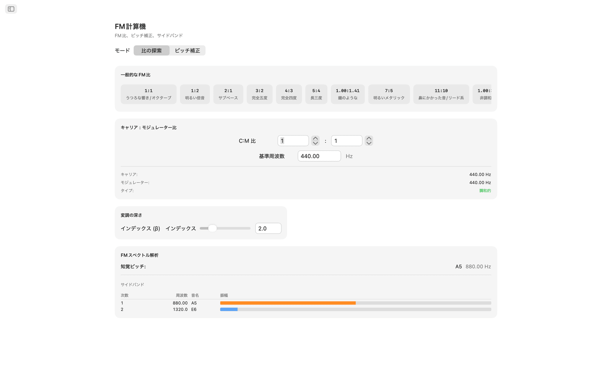
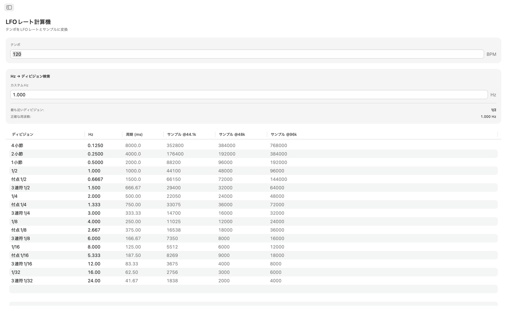
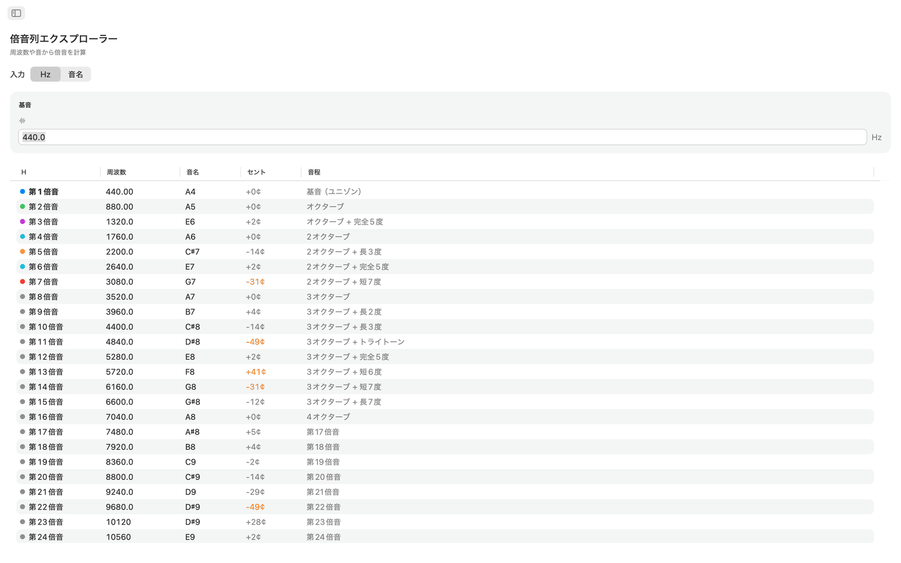
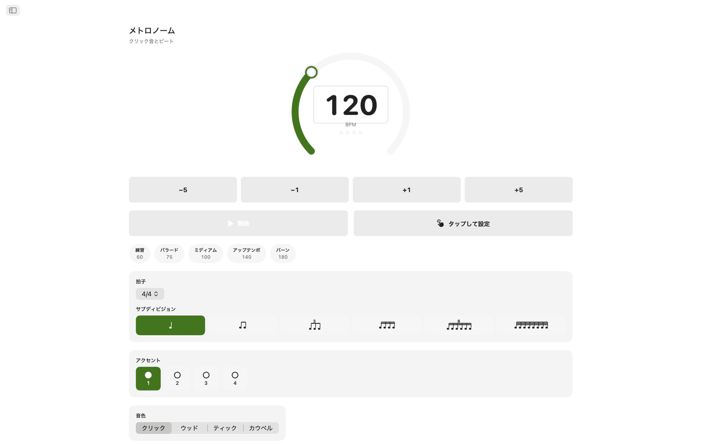
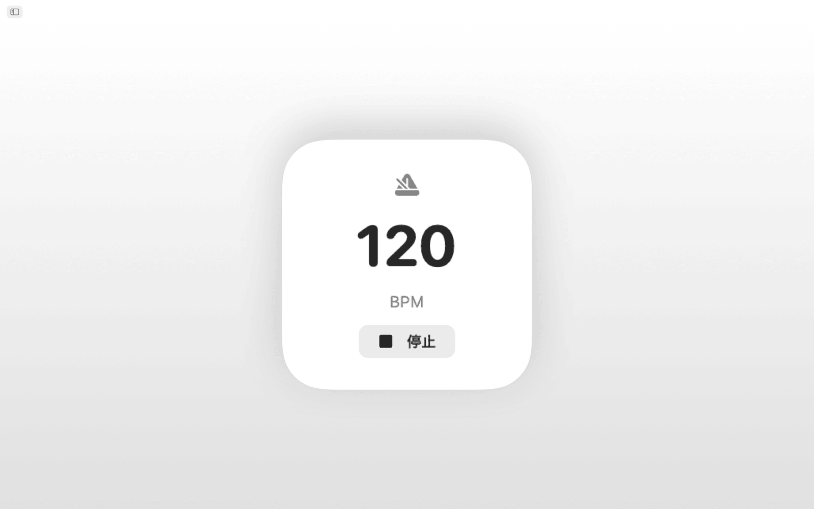
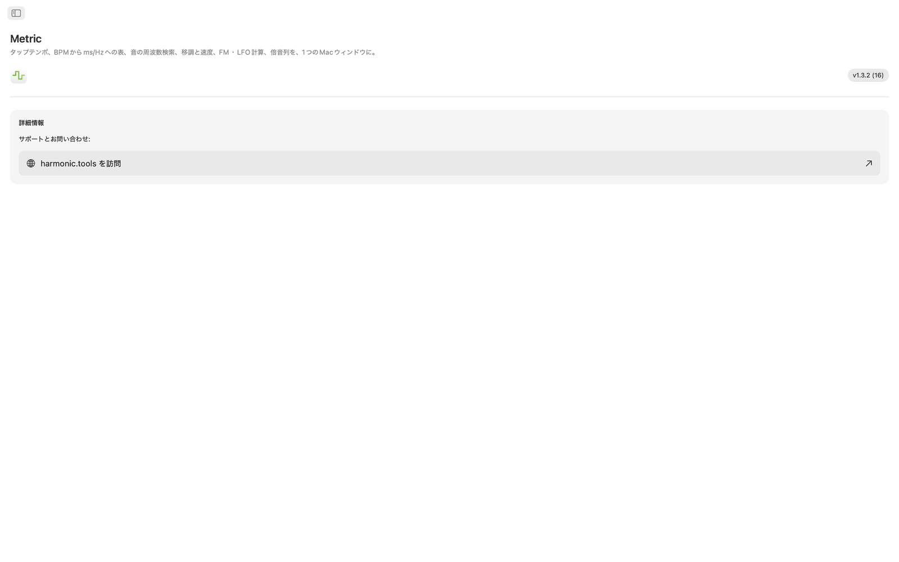
機能
- メトロノームには、テンポダイヤル、タップでのテンポ設定、拍子、細分、ビジュアルビートインジケーターがあります。
- 広いタップエリアをクリックしてテンポを測定します。最後のタップのBPMと最大8タップの移動平均が表示され、どちらの値もワンクリックでBPMコンバーター、移調、LFOレートに送れます。
- BPM → ms / Hz コンバーターは、テンポを入力すると、全音符、2分音符、4分音符、8分音符、16分音符の通常、付点、3連符の値を表示します。各行にミリ秒とHzが並ぶので、ディレイ、リバーブのプリディレイ、サイドチェインのタイミングを計算機なしで決められます。
- 音の周波数テーブルには、C0からB8までの108のクロマチック音名が並びます。各音のMIDI番号、Hz周波数、ミリ秒単位の周期、44.1kHz、48kHz、96kHzでのサンプル数を確認できます。中央Cには印が付いています。基準はA4 = 440 Hzです。
- 移調では、元のキーと目標キーを選ぶと、半音ステップ数、音程名、DAWで入力する正確な移調値が表示されます。元のBPMを加えると、Metricが新しいテンポと再生速度比を計算します。セントスライダー（±100）と2オクターブ分の速度スライダー（±24半音）で微調整できます。
- FM計算機には2つのモードがあります。比の探索は、基本周波数からキャリアとモジュレーターの比を設定し、空洞的なオクターブ（1:1）から非調和なベル（1:π）まで10種類のFMプリセットから選べます。ピッチ補正は逆方向で、目標音を選ぶと正確なキャリア周波数とモジュレーター周波数が分かります。どちらのモードも、最大10のパーシャルについて周波数、最も近い音名、色分けした振幅をサイドバンドテーブルに表示し、モジュレーションインデックスのスライダーで変化を確かめられます。
- LFOレート計算機は、BPMを17通りのディビジョンのLFOレートに変換します。4小節から1/32の3連符までです。各行にHz、ミリ秒単位の周期、44.1kHz、48kHz、96kHzでの1サイクルあたりのサンプル数が出ます。逆引きでは、任意のHz値を入力すると最も近いディビジョンが見つかり、誤差も表示されます。
- 倍音列エクスプローラーは、周波数または任意の音から始めて、最初の32倍音を周波数、最も近い音名、セント偏差、音程名とともに一覧にします。低次の倍音は色分けされ、30セントを超える偏差は強調表示されるので、非調和成分を見つけやすくなっています。
共有されるテンポとチューニング
テンポを一度タップすると、BPMコンバーター、移調、LFOレートの各ツールが同じBPMを使います。音の周波数、FM計算機、倍音は、すべてA4 = 440 Hzを基準にしています。
Siri、Shortcuts＆ウィジェット
Siriに、メトロノームの開始・停止、BPMの設定、テンポのタップ、BPMからmsへの変換、音の周波数の検索、テンポの移調を頼めます。すべてのツールはShortcutsアクションにもなっていて、BPMウィジェットはテンポを通知センターに表示します。
メニューバーのツール
アプリを開かずに、メニューバーからテンポをタップできます。右クリックでディレイタイムをmsまたはHzで表示し、好きなテンポを入力することもできます。メトロノームと音名の項目は任意で、メニューバーのみのモードとログイン時の起動も設定できます。
デスクトップで使う
- 完全オフライン動作。アカウント、広告、トラッキングなし
- サイドバーナビゲーションのネイティブmacOSアプリ
- システムテーマに従うダークモード対応インターフェース
- 44.1kHz、48kHz、96kHzでのサンプル数を表示
- リサイズ可能なウィンドウ。DAWの横に開いておけます
アクセシビリティ
VoiceOverと音声コントロールに対応し、矢印キーとスペースバーでキーボードからも操作できます。
Metricは7日間無料でお試しいただけます。試用期間後は、サブスクリプションではなく一度きりの購入でフルアクセスになります。